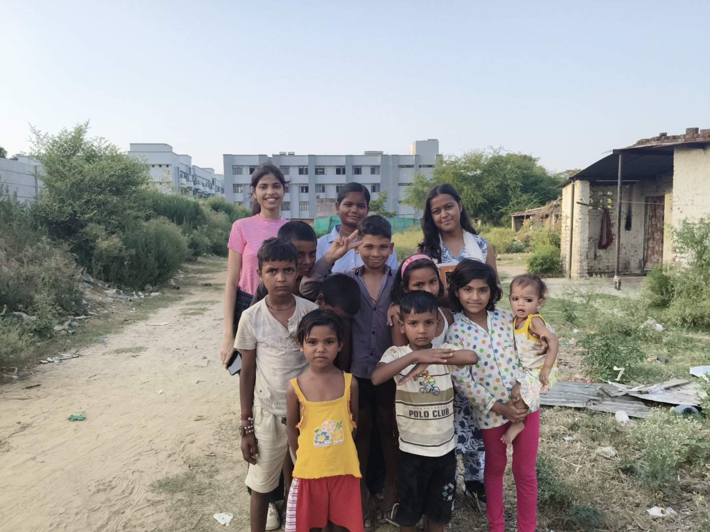

Education
School admissions & learning support for underserved children.
View ImpactOur holistic approach addresses community needs through structured, sustainable interventions.
School admissions & learning support for underserved children.
View ImpactCounselling, awareness & mentorship for stronger communities.
View ImpactPassionate individuals driving on-ground community impact.
Join NetworkReal-world experience & skill-building for changemakers.
Apply NowVerified, publicly verifiable credentials for completions.
Verify CertificateOur flagship programs delivering education support, youth empowerment, and personal development for children and adolescents.

At Amaanitvam Foundation, we believe that the future of a nation is shaped in the minds of its children. Through Project Shiksha, we strive to ensure that no child is denied the opportunity to learn, dream, and grow simply because of circumstance.
India is home to one of the largest youth populations in the world, yet many children still lack access to quality education, mentorship, and the support needed to unlock their full potential. Project Shiksha was born from the belief that education is not a privilege for a few, but a right that belongs to every child.
The initiative began with just 2 students and, through continuous efforts, community support, and dedicated volunteers, has now impacted more than 50 children. It provides educational support, mentorship, skill development, and personal guidance to children from underserved communities.
Many children were unable to secure admission in government schools due to a lack of proper documentation and guidance. The foundation supported these children and their families by assisting with school admission procedures, preparing and arranging required documents, and guiding parents through the admission process.
Project Shiksha goes beyond admissions. It works to create an environment where learning extends beyond textbooks and examinations, nurturing curiosity, confidence, creativity, and long-term educational growth.
At Amaanitvam Foundation, we also recognize that transformation requires more than lessons alone. Sometimes what changes a life is a caring mentor, a listening ear, a word of encouragement, or the assurance that someone believes in a child’s potential.
Through Project Shiksha, we are not merely teaching lessons — we are helping write the future of India, one child, one dream, and one opportunity at a time.

Project Manthan was created to spread awareness about the central role of education, personal development, and positive life choices in shaping a child’s future. It focuses on children and adolescents who need guidance, encouragement, and a safe environment to grow.
Under this initiative, Amaanitvam Foundation works with children to address negative habits, personal challenges, and emotional struggles through awareness sessions, counselling, and mentorship.
Manthan is not just about teaching lessons — it is about inspiring confidence, nurturing dreams, and giving children the opportunity to believe in themselves. It seeks to empower them with self-dignity, awareness, and hope.
The initiative includes counselling and mentorship sessions, guidance on positive life choices, awareness regarding harmful habits and their consequences, and personality development activities designed to improve confidence and decision-making abilities.
Regular interactive sessions help participants understand the importance of education, discipline, emotional well-being, hygiene, digital safety, responsible citizenship, and positive social behaviour.
Volunteers and mentors work closely with children to identify the challenges they face in their daily lives and provide practical support to overcome them. Through consistent engagement, participants develop stronger communication skills, self-confidence, and a more positive outlook toward education and personal growth.
Project Manthan continues to create safe spaces where children can learn, express themselves, and receive the support they need to move toward a brighter future.

Project Pravah is a pilot initiative launched in Hisar, Haryana, built on a simple yet powerful belief: when given the right opportunities, every child and young person has the ability to shape their own destiny.
The word “Pravah” signifies flow — a continuous movement toward growth and progress. Through this initiative, Amaanitvam Foundation seeks to carry hope, opportunity, and empowerment into the lives of children and youth who need it most.
Project Pravah focuses on educational support, mentorship, awareness, and grassroots community engagement. Its mission is to ensure that children and youth are not held back by circumstances beyond their control, but are equipped with the knowledge, skills, and confidence necessary to build a brighter future.
The initiative encourages young minds to think critically, dream fearlessly, and recognize their ability to become agents of positive change within their communities. It places strong emphasis on leadership, self-belief, and a sense of responsibility toward society.
Beyond classrooms and textbooks, Pravah works to cultivate awareness about civic responsibility, social harmony, and community participation. Through workshops, outreach activities, and guidance sessions, it seeks to foster empathy, cooperation, and active citizenship.
Hisar is where this journey begins, but the vision extends far beyond a single city. Project Pravah aims to create stronger support systems for rural youth and empower the next generation with knowledge, access, and hope.
Like a river that gathers strength as it flows, Project Pravah is a movement toward possibility — one that believes that when opportunity meets determination, transformation becomes inevitable.

Project Udaan is a grassroots educational research initiative undertaken by Amaanitvam Foundation to understand the realities faced by children living in underserved communities. As part of this project, our volunteers visited a slum settlement behind BBD Green City, Tiwari Ganj, Lucknow, to study the educational status, aspirations, and living conditions of children belonging to economically weaker sections of society.
During the community visit, the team interacted directly with children and their families, observed their daily lives, and identified several barriers affecting their education. While basic facilities such as electricity, drinking water, and access to a nearby government school were available, children continued to face significant social and economic challenges that restricted their educational growth.
One of the most critical observations was the poor sanitation infrastructure. Unhealthy surroundings frequently resulted in illness among children, affecting school attendance and limiting their ability to participate consistently in classroom learning. Improving educational outcomes therefore requires attention not only to schooling but also to health and hygiene.
The study also revealed a serious shortage of educational resources. Many children lacked textbooks, notebooks, stationery, digital learning tools, and quiet spaces to study. Most families lived in small overcrowded homes, making it difficult for students to concentrate on their education after school hours.
Financial hardship remained one of the largest obstacles. Most parents worked as daily wage labourers and struggled to meet educational expenses. Despite these limitations, nearly every parent expressed a strong desire to educate their children and provide them with better opportunities for the future.
Conversations with the children were inspiring. Many dreamed of becoming teachers, doctors, police officers, engineers, and other professionals. Their determination demonstrated that talent and ambition exist everywhere; what many children lack is access to resources, guidance, and continued support.
Project Udaan serves as a foundation for future educational interventions. The research conducted through this initiative helps Amaanitvam Foundation design meaningful community programs, identify priority areas, and build sustainable solutions that improve access to quality education for marginalized children.
Through Project Udaan, the Foundation believes that understanding communities at the grassroots level is the first step toward creating lasting educational change and ensuring that every child has the opportunity to learn, grow, and achieve their dreams.